Dobrogosczi Dubri
{kind=link}
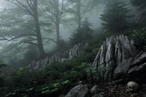
Dobrogosczi Dubri (Zgurian; Deglian: Dobrogoŝi Dubri; Glagolitic: ⰄⰑⰁⰓⰑⰃⰑⰛⰊ ⰄⰖⰁⰓⰊ) is a forested karst region in the western part of the Nexozsi Vrjexi range, in Former Upper Pannonia. It covers roughly 620 square kilometers near the borders with Slovenia and Croatia. The name literally means "Hospitable Woods" — a superstitious euphemism: in reality the forest is nearly impassable and lethally dangerous to the inexperienced traveler.
Nature
Geology and climate
{kind=link}
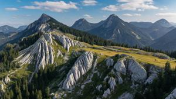
The mountains here are built of limestone highly prone to karstification, and there is no continuous soil cover. The surface is a chaotic jumble of deep sinkholes and karren — weathered razor-sharp stone ridges. Whatever usable substrate exists — the red "terra rossa" clay, the forest humus — never stays on the surface for long; rain washes it down into deep rock fissures and to the bottom of karst shafts.
The region's defining hydrological feature is the total absence of surface water. Because the limestone is so porous, every drop of rain sinks straight into the ground. Instead of streams, rivers, or lakes, the water forms a branching network of underground channels, siphons, and vast cave galleries, inaccessible from above. These channels re-emerge below the karst belt as countless springs, which converge in the Glazsica Valley into a single stream — the source of the South Drava, the principal river of Upper Pannonia.
{kind=link}
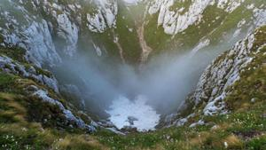
The Nexozsi Vrjexi range blocks moist air masses coming off the Adriatic, which keeps precipitation levels high. The climate is extremely wet, comparable in rainfall to a tropical rainforest, though the broken terrain makes the microclimate wildly uneven. Karst sinkholes trap heavy, cold air and form so-called "frost pockets": across a distance of just a few dozen meters, the temperature can drop 10–15°C between the rim of a sinkhole and its floor. Icy fog often lingers at the bottom of the deepest depressions, and snow can survive in their shadow until midsummer.
Flora
{kind=link}
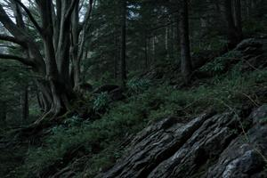
Despite the poor soil, Dobrogosczi Dubri is covered in dense, old-growth forest — mostly beech, spruce, and fir — a relic stand that has survived only because the terrain makes logging and grazing physically impossible.
The trees survive on bare rock through a kind of "flowerpot effect": rather than rooting at the surface, they send roots deep into fissures packed with damp clay and humus. These wedge-like roots force their way into microscopic cracks, thicken, and build up enough hydraulic pressure to split multi-ton monoliths of solid rock. Reaching meters down into the crevices, they stay constantly bathed in the damp condensation rising from the caves below, while broad surface roots wrap tightly around the exposed rock, anchoring the massive trunks against falling.
The undergrowth is dense throughout. Wherever the canopy of old beeches and firs lets light through, the gaps between the karren fill with impenetrable thickets of creeping juniper, bramble, and spurge-laurel. The ground layer is made up of tough grasses adapted to a shortage of soil moisture, and giant ferns whose sprawling fronds hide the true scale of the rock sinkholes beneath them. The damp, shaded walls of the deep dolines and shaft openings are coated in a thick, slick layer of liverwort moss.
Above the tree line, a narrow band of alpine meadow winds along the ridge of the Nexozsi Vrjexi. These meadows look nothing like an unbroken green carpet: tough grasses, sedges, and stunted mountain herbs grow in patches, clinging to whatever thin soil collects in the hollows between bare limestone ridges.
Fauna
{kind=link}
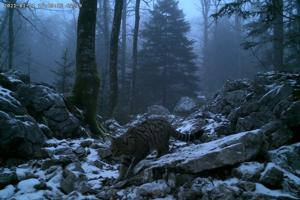
The region's small fauna consists of animals able to move through a chaotic jumble of rock. Stone martens, wildcats, and various rodents (dormice, voles) nest among the karren and upturned roots, finding shelter in the endless fissures. The dampness and abundance of moss also support a large amphibian population — salamanders and toads that never stray far from wet cracks in the rock.
The troglobitic (cave-dwelling) fauna is exceptionally rich: the branching underground systems host endemic species of blind amphibians and crustaceans, along with enormous bat colonies.
The sheer inaccessibility of the terrain makes it an ideal refuge for animals that avoid people. Despite the extreme relief, stable populations of large mammals persist here, their behavior entirely dictated by the karst geology.
{kind=link}
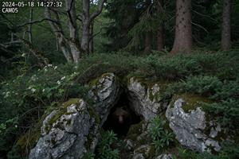
The brown bear is the undisputed master of Dobrogosczi Dubri. Despite their seemingly clumsy build, bears use their long claws like climbing picks, scaling rough limestone slopes with ease, while the abundance of dry caves and rock niches gives them ideal dens for hibernation. Hoofed animals, by contrast, are far more restricted in their movement. Wild boar and roe deer rarely risk the karren-scarred ground, living instead at the bottom of the broad karst sinkholes, where soft clay and beechnuts wash down and collect, letting the boar root through the soil for food. Forest ungulates effectively live at the bottom of these sinkholes as if in natural pens, moving between them only along well-worn, safe trails.
{kind=link}
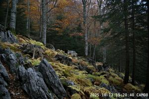
Predators such as lynx and the few packs of forest wolves have adapted their hunting to the landscape. The wolves here don't run their prey down in long, exhausting chases; instead their tactic is to trap a roe deer, driving it toward the sheer edge of a karst shaft or into a dead end of impassable deadfall, where it loses its footing or breaks a leg. These wolves are lighter and smaller than their lowland relatives, and over time the pads of their paws toughen into calluses resistant to cuts from the limestone.
{kind=link}
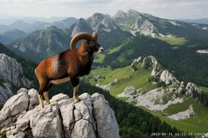
Above the tree line, on the alpine meadows, one finds chamois as well as the Dinaric mouflon — a relict subspecies of wild sheep found nowhere else in continental Europe. The terrain up there is just as broken and difficult to cross, but it is open, which gives these hoofed animals a crucial advantage: a clear line of sight that protects them from sudden predator attacks. At these elevations, snow can also linger in the deep sinkholes until late summer, supplying the chamois and mouflon with meltwater.
Still, surviving here without rivers demands special adaptations from large animals. Deer, bears, and boar rely on a brief drinking "window": during and right after heavy downpours, they drink from kamenitzas — natural basins hollowed into the limestone by water — which hold moisture for only a few hours before it evaporates or seeps away. In dry spells, animals wear paths down to the broadest, most gently sloped sinkholes in search of the rare siphon cave. In a landscape where humans pose almost no threat to large wildlife, it is the scarcity of water, not predation, that ultimately caps their numbers.
Dobrogosczi Dubri and humans
Dangers
{kind=link}
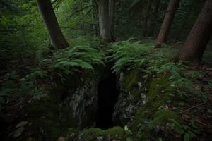
For people, Dobrogosczi Dubri is a natural obstacle course lined with deadly hazards. Walking over karren hidden under leaf litter shreds even sturdy boots in no time, and the constant climbing up and down the crumbling walls of sinkholes takes a heavy toll on the joints.
Deep karst fissures and the mouths of vertical shafts (ponors) are often completely overgrown with a solid mat of moss and ferns, or buried under years of rotting deadwood and leaves. Stepping onto one of these moss traps can send a person plunging tens of meters underground, or wedge a foot fast in a narrowing crack.
The absence of the familiar sound of running water, combined with the tangled geometry of the sinkholes, leaves travelers with no sense of direction. Footsteps are swallowed up by the wet moss, while a cry for help bounces chaotically off the rock walls, scrambling its direction and confusing any would-be rescuer.
Every visitor to Dobrogosczi Dubri eventually notices a pack of wolves trailing them at a safe distance. They never attack. They watch, and they wait for the person to fall into something, get stuck, or break a leg. More often than not, they get their wish.
Mythology and folklore
{kind=link}
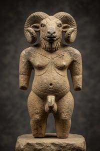
Among the people of the surrounding valleys, Dobrogosczi Dubri has always had the reputation of a place from which no one returns, wrapped in a long tradition of grim legend. In pre-Christian times the forest was considered sacred: surviving cave paintings and archaeological finds suggest a cult devoted to a deity with a human body and a mouflon's head, likely a local counterpart to the Greek Pan or the Celtic Cernunnos. According to the Life of St. Tibor, it was here, in the Glazsica Valley on the edge of the forest, that the saint encountered a faun and made the sign of the cross over it, whereupon the faun's fur fell away and its horns dropped off — a story that probably reflects the Catholic Church's campaign against the remnants of pagan cults in the early Middle Ages.
Later folk belief populated Dubri with every kind of unclean spirit. Alongside the pan-Balkan vlokodlaks (werewolves) and karakondjuls (faun-like hybrid demons), the caves here are said to house zmijevilas — serpent-women who lure travelers into the ponor shafts with siren song — and ljeliks, shapeshifting bats that appear in nightmares and drag people out of the waking world into the world of dreams.
The Glazsiczane
{kind=link}
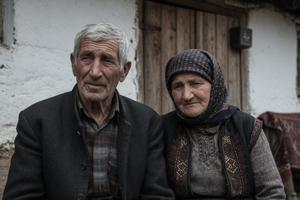
All the surrounding population avoided Dubri, with one exception: a small group known as the Glazsicians (glazsiczane), inhabitants of the two villages of the Glazsica Valley, Old Glazsica and New Glazsica. For these communities, hunting in Dubri was traditionally both a supplementary means of subsistence and a rite of passage. Fathers taught their sons the safe trails, the rules of moving through the forest, and the habits of its animals; a boy became a man only after venturing into the forest alone and returning with his first kill.
This intimate familiarity with the "unclean" forest made the Glazsicians themselves something like unclean beings in the eyes of neighboring peasants, who shunned them and refused to intermarry with them. Recent genetic research has shown that today's Glazsicians — only about 200 of them remain — spent millennia in isolation and preserved, almost untouched, the gene pool of Europe's pre-Indo-European farmers; they are noticeably shorter and darker in skin, eye, and hair pigmentation than the surrounding population. The Glazsicians speak the same Pannonian (Slavic) language as the rest of the region, but they have kept a number of unique terms — probably of non-Indo-European origin — for specific features of the local terrain: the various kinds of sinkholes, caves, and so on.
History and current status
From the Middle Ages until 1946, Dobrogosczi Dubri, including both villages of Glazsica and the surrounding hamlets, was held as the property of the Barons Zorza, whose Zorzsin Castle stands on the eastern edge of the forest. The region's landscape and folklore are immortalized in the poetry of Branko Dundulicz — the ballad "Zmijevila" and the lyric poem "Dobrogosczi Dubri," about the poet's own trek through the forest with a Glazsician guide. The Communist government nationalized Dubri and declared it a nature reserve, a status that formally remains in force today. In practice the territory goes unpatrolled — but then, it hardly needs to be.
The ridge of the Nexozsi Vrjexi carries the border with Croatia and Slovenia. Even in the later years of Gowbka's rule, when every other stretch of the country's border was closely guarded and fitted out with an array of defensive works, this section remained empty; border guards merely overflew it by helicopter to keep watch. Documents declassified after 1990 show not a single recorded border crossing along this stretch. Today the border remains unfortified, with no checkpoints or crossings of any kind.
Within Former Upper Pannonia, Dobrogosczi Dubri borders the Deglian Republic to the east and the Zgurian Republic to the north. The Glazsica Valley, a site of fighting in 1994–1995, is now under the control of the Deglian Republic. The forest itself is controlled by no one, and neither side lays any territorial claim to it.